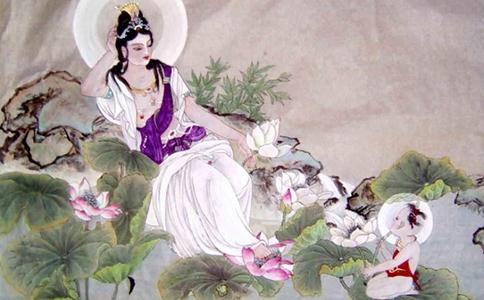

在苏杭一带百姓家中，还常常供奉“观音八相图”。百姓们所以喜欢供奉这观音八相，是因为这图原来是
这位善人王锡爵，别号荆石，曾任显宦，晚年归隐家园，笃行
一天，王荆石读诵《
他打定主意以后，便去找圆通法师商议。见到法师后，王荆石说；“圆通师长，
圆通法师一听，非常高兴，说：“
王荆石说；“只是还有一事要请师长指教，就是菩萨所显化宝像各各不同，不知要画哪种宝相为好？师长博通，请给弟子指点。”
圆通法师说：“要画哪种观音宝相为好，照《千光眼观自在菩萨秘密法经》上所说，共有八相：第一是金刚观自在菩萨，第二是与愿观自在菩萨，第三是数珠观自在菩萨，第四是钩召观自在菩萨，第五是除障观自在菩萨，第六是宝剑观自在菩萨，第七是宝印观自在菩萨，第八是不退转金轮观自在菩萨。八尊菩萨有八副相，各有一般
王荆石想了想，说：“师长指教甚是，我看不如多请几位画师，先让他们斋戒沐浴，至诚祷告菩萨，请菩萨示兆，现宝相让画师看，画师看了菩萨宝相后再画，岂不是好。”圆通法师说：“如此甚好。”王荆石即时招雇画工，恰恰招了八位，便将祈梦画菩萨宝相的事告诉八位画工。画工按照王荆石的吩咐，斋戒沐浴祈梦，但是一连几日，八人中没
这时观音菩萨正好
白衣秀士来到桌前，挽起衣袖，提起笔来就画，但见秀士运笔如风，挥毫似电，不消片刻，一幅观音像就已画成。接着继续挥洒，又成了一幅，不到半日时间，八副宝相就全部画成。请来的八位画工无不惊叹叫绝，王荆石更是异常高兴。
再看八幅画，第一幅题名“金刚观自在菩萨”，为忿怒相，横眉怒目，作瞋恚之状；此相可慑伏群魔。第二幅题名“与愿观自在菩萨”，为大慈之相，慈眉善目，左手持经，右手作施愿状；此菩萨让人与愿以求，广结善缘。第三幅题名“数珠观自在菩萨”，为大悲相，菩萨合目瞑坐，手执一串
王荆石看了八幅宝相，喜出望外。那秀士画完后，对王荆石说：“如今善人有了这八幅宝相，可以作为蓝本，八位画师就可临摹，在下就不再多留，就此告辞了。”王荆石执意相留，也留不住。送银子作酬劳，也坚不肯受。却从怀中取出一颗子，送给王荆石，说：“此是西方无畏子，经常佩在身上，可消灾免害，益人智慧。”荆石一再相谢，亲手送到大门外。
送走白衣秀士后，王荆石兴冲冲拿着八幅观音菩萨宝相去找圆通法师，向他告知一切经过。圆通法师听后，高兴地对王荆石说：“恭喜居士，你今天遇见菩萨了。”荆石不知底里，惊讶地说：“遇见哪个菩萨了？你是说那作画的白衣秀士就是观世音菩萨？”圆通法师说：“对，那白衣秀士就是观音菩萨，要不是菩萨，凡人哪能画出这种宝相？再者，要不是菩萨，谁送你这西方无畏子？”
王荆石恍然大悟，万分惊喜。他为菩萨亲自到他家现身作画感到荣幸，从此更虔信佛法，广作善事。他将八幅宝相悬挂在大厅，让八个画工每人临摹一幅，画完一帧，他又自己亲写《心经》一卷，和画一起送给人家，整整画了一年，才送满了一千幅。菩萨手画的八幅，则作为传家宝留在家中，世代供奉。